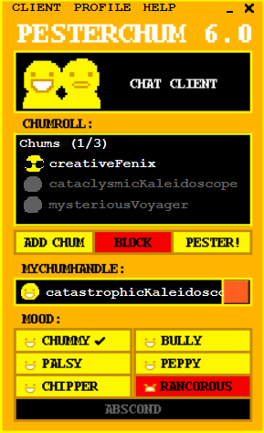

> Gabe: Abrir Pesterchum.

Você abre seu PESTERCHUM, o aplicativo de conversa mais popular do momento, especialmente depois da adição da mecânica de "Encontro Aleatório", que permite entrar em um chat com alguém aleatório, parecido com o Omeagle.
No entanto, você não abriu o Pesterchum apenas para passar o tempo. Um dos seus amigos (ou Chums) está online, e é exatamente quem você queria falar. Você preparou uma surpresa para essa amiga com antecedência.